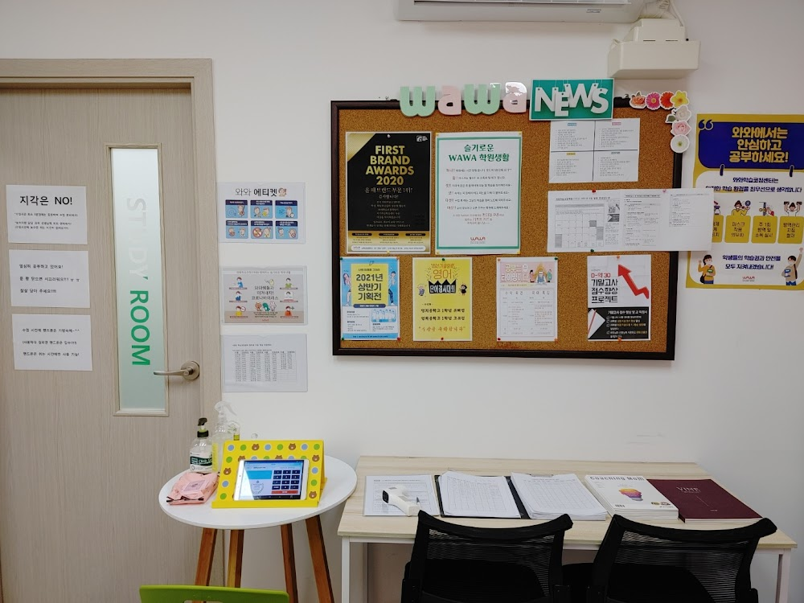
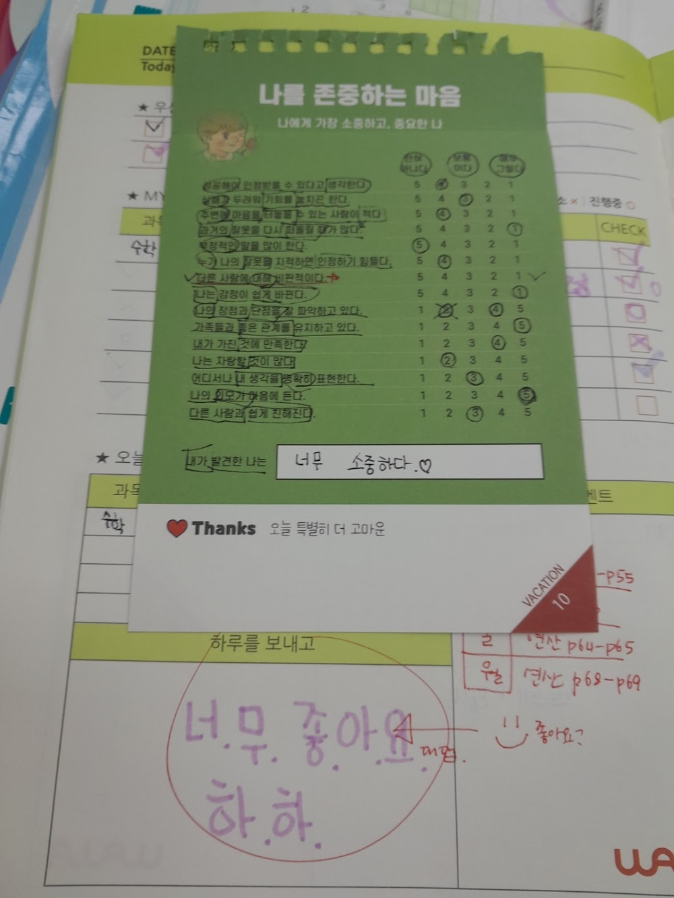
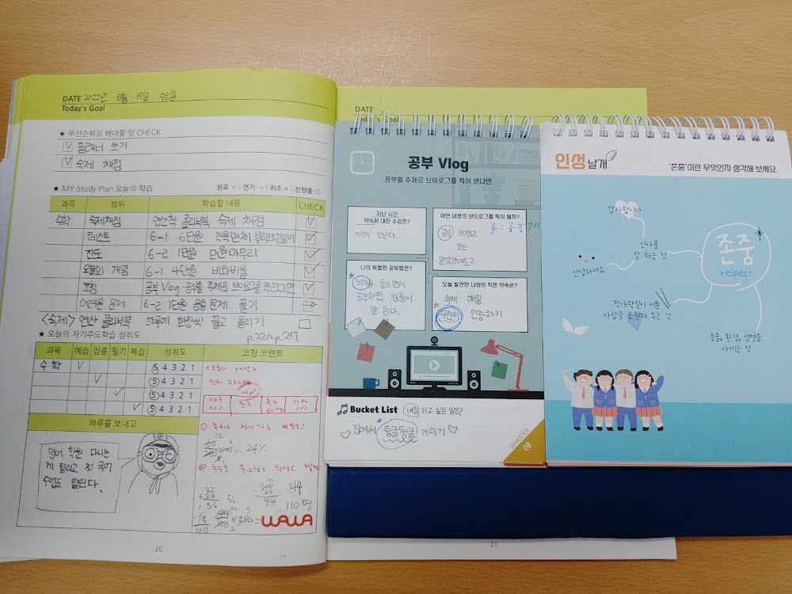

안녕하세요, 서대문구 남가좌동 가재울뉴타운 와와학습코칭 가좌점 코치진입니다. 여름방학을 앞두고, 저희 센터에 다니는 학교 친구들과 국·영·수·사·과 방학 공부 전략을 코치의 시선으로 전해드립니다.
가좌점에는 이런 학교 친구들이 함께 공부합니다
가재울뉴타운 특성상 가재울초·연가초 초등학생과 가재울고 고등학생이 많이 다닙니다. 초등은 공부 습관과 기초를, 고등은 내신·수능을 준비하는 학생이 많아, 방학 동안 각 학년에 꼭 맞는 코칭이 이뤄집니다.

이런 아파트 단지에서 걸어서 옵니다
가좌점은 가재울뉴타운 중심에 있어 DMC파크뷰자이, DMC에코자이, 래미안DMC루센티아, DMC래미안e편한세상, DMC래미안클라시스, 남가좌현대 등 대단지 학생들이 걸어서 옵니다. 단지에서 가까워 초등 자녀도 안심하고 보내실 수 있습니다.
국·영·수·사·과 여름방학 공부 전략
초등과 고등이 함께 다니는 만큼, 학년에 따라 방학 전략이 다릅니다. 가좌점이 권하는 과목별 방향입니다.
- 국어 — 초등은 독서와 어휘, 고등은 기출 지문 분석과 독해 훈련.
- 영어 — 초등은 파닉스·기초 문장, 고등은 어법·구문·독해 속도.
- 수학 — 취약 단원 개념 재정비 후 다음 학기 예습. 매일 오답 점검.
- 사회 — 개념 흐름 잡기. 고등은 통합사회·한국사 정리.
- 과학 — 실험 원리와 핵심 개념 이해 중심으로 방학 동안 다지기.

여름방학, 이렇게 준비하세요
가좌점은 방학 첫날 학생과 함께 하루 계획을 세우고, 매일 스스로 공부하고 점검하는 습관을 만듭니다. 특히 초등 시기의 공부 습관은 이후 모든 학습의 바탕이 됩니다. 가재울 학부모님들, 이번 방학 아이의 성장을 함께 만들어가겠습니다.
.와와학습코칭 가좌점 학년별 공부 방법
남가좌동 와와학습코칭(와와학습코칭 가좌점)은 초등학생·중학생·고등학생 각 학년에 맞는 공부 방법으로 지도합니다. 조용한 자습실·공부방에서 스스로 공부하고, 영어학원·수학학원·과학학원·국어학원처럼 과목별 코칭까지 한곳에서 받을 수 있습니다.
- 초등학생 (초1·초2·초3·초4·초5·초6) — 매일 정해진 분량을 스스로 해내는 공부 습관과 기초 개념 잡기. 남가좌동 초등 영어학원·수학학원·공부방을 찾으신다면.
- 중학생 (중1·중2·중3) — 자유학년제·내신 대비, 오답 정리와 서술형 훈련. 남가좌동 중등 영어학원·수학학원·과학학원·국어학원.
- 고등학생 (고1·고2) — 내신과 수능을 함께 잡는 자기주도학습 플래닝과 취약 과목 집중. 남가좌동 고등 영수학원·종합학원·자기주도학습.
와와학습코칭 가좌점 위치와 주변
- 🚇 교통 — 경의중앙선 가좌역에서 도보 약 15분 (가재울뉴타운 중심)
- 🏢 인근 아파트 — DMC파크뷰자이, DMC에코자이, 래미안DMC루센티아, DMC래미안e편한세상, DMC래미안클라시스, 남가좌현대 등 단지에서 도보로 오실 수 있습니다.
와와학습코칭 가좌점 인근 학교
남가좌동·가재울 와와학습코칭(와와학습코칭 가좌점)은 인근 학교 학생들의 내신·수능을 함께 준비합니다. 아래 학교에 다니는 학생이라면 영어학원·수학학원·과학학원·국어학원을 따로 찾을 필요 없이, 가까운 우리 센터에서 과목별 1:1 자기주도학습 코칭을 받을 수 있습니다.
- 인근 초등학교 — 가재울초등학교, 연가초등학교 영어학원·수학학원·과학학원·국어학원
- 인근 고등학교 — 가재울고등학교 영어학원·수학학원·과학학원·국어학원
📍 와와학습코칭 가좌점 센터 정보 자세히 보기 — 주소·전화·인근 학교 안내를 확인하실 수 있습니다.